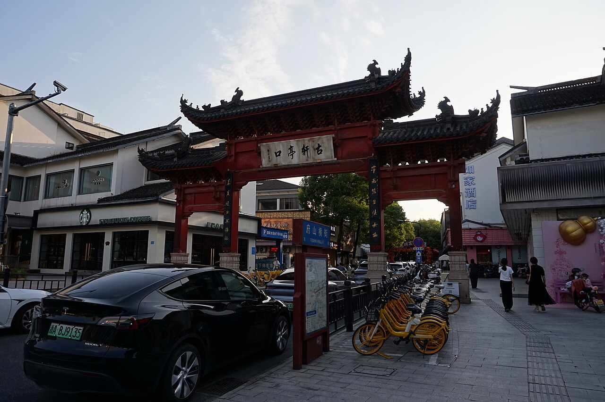

9/30（周二）出发 → 10/4（周六）返程 ｜ 一家三口（女童6岁·身高1.27m）｜ 上海自驾 ｜ 全程不挪窝

实景照片 · 来源 Wikimedia Commons（CC协议）
| 维度 | ★ ① 首旅南苑云荟 新首选 |
② 凯悦嘉轩 备选 | ③ 柯桥亚朵 严格亚朵 |
老金沙 老旧备选 | 苏州湾亚朵 苏州备选 |
|---|---|---|---|---|---|
| 开业/新度 | 2023新装 | 2025新开 | 亚朵较新 | 2016老 | 亚朵较新 |
| 距玩水 | 东方山水5分钟 | 12分钟/5.3km | 约5km | 水之王国419m | 苏御134m |
| 爸爸夜市 | 柯桥古镇步行 | 柯桥10分钟 | 柯桥夜市1.4km | 需驱车 | 同里/山塘 |
| 妈妈舒服 | 新·智能·外卖 | 凯悦新 | 亚朵深睡 | 陈旧 | 亚朵深睡 |
| 国庆房价 | 700–1000/晚 | 700–1100/晚 | 700–1100/晚 | 1000–1500/晚 | 700–1100/晚 |
✅ 推荐走 ① 首旅南苑云荟：2023新装、距东方山水仅5分钟（最近玩水）、背靠柯桥古镇（爸爸夜市零通勤）、现代轻奢智能、价格友好。老金沙(2016)因设施陈旧已降级为"极致近水但老旧"备选；若你坚持严格亚朵品牌，退回 ③ 或苏州湾亚朵。
| 日期 | 安排 | 满足谁 | 详情页 |
|---|---|---|---|
| 9/30 周二 | 抵柯桥→入住南苑云荟→水之王国玩水(5min)→柯桥古镇夜游 | 女童爸爸 | 水之王国 · 柯桥夜市 |
| 10/1 周三 国庆 | 水之王国+山之王国 → 安昌古镇夜游 | 女童爸爸 | 山之王国 · 安昌古镇 |
| 10/2 周四 | 安昌白天+乌篷船 → 温泉小镇妈妈泡汤 | 爸爸妈妈 | 安昌古镇 · 温泉小镇 |
| 10/3 周五 | 酷玩王国（或二刷水之王国）→ 绍兴古城夜市 | 全家 | 酷玩王国 · 绍兴古城夜市 |
| 10/4 周六 | 轻松玩水/瓜渚湖 → 14:00前返沪（高速免费） | 全家 | — |
| 版本 | 住宿 | 门票+温泉 | 餐饮 | 交通 | 合计 |
|---|---|---|---|---|---|
| ① 南苑云荟版 | 2800–4000 | 1630–2210 | 1750–2750 | 350 | 约 6530–9310 |
| ② 凯悦版 | 2800–4400 | 1630–2210 | 1750–2750 | 350 | 约 6580–9710 |
| ③ 柯桥亚朵版 | 2800–4400 | 1630–2210 | 1750–2750 | 350 | 约 6580–9710 |
| 老金沙版 | 4000–6000 | 1630–2210 | 1750–2750 | 350 | 约 7480–10810 |
| 苏州湾亚朵版 | 2800–4400 | 1270–2000 | 1500–2500 | 300–500 | 约 5870–9300 |
明细与各园价格请见下方各详情页。